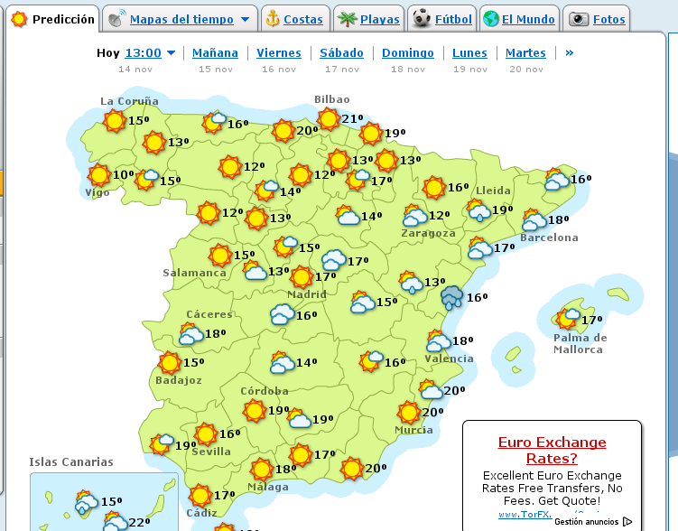

1. Introducción
La práctica de hoy consistirá en utilizar alguna de las funciones que nos proporciona el navegador para hacer más cómoda nuestra navegación, como son los botones de adelante/atrás y el uso de pestañas. Para ello, visitaremos algunas páginas de las que ya conocíamos e intentaremos gestionar mejor la apertura de ventanas.
2. Buscar en google y utilización de pestañas
Busca en Google el siguiente término: video tarta tres cocholates. De todos los resultados que te ofrece, abre en una pestaña nueva (con el botón derecho del ratón) el primer, segundo y tercer resultado.

¿Cuál de todas las páginas te ha resultado más interesante?
Cierra las pestañas que se hayan abierto hasta quedarte con 1 única pestaña.
3. Utilización de los botones de adelante/atrás.
Vamos a conectarnos ahora a la web de El Tiempo, quiero que comprobéis el tiempo de 3 localidades: Villarreal, Valencia, y Tarragona. Utiliza los botones de atrás/adelante para hacer la navegación más fluida.
4. Farmacias de guardia.
Volvamos otra vez a Google, esta vez para buscar lo siguiente: Farmacias de guardia en Castellon.
¿Cuál es el enlace más interesante?
5. Isabel Allende.
Para terminar, quiero que busquéis información en la Wikipedia acerca de Isabel Allende, y utilizando los botones de adelante/atrás, naveguéis por la información de las obras más famosas que ha escrito.